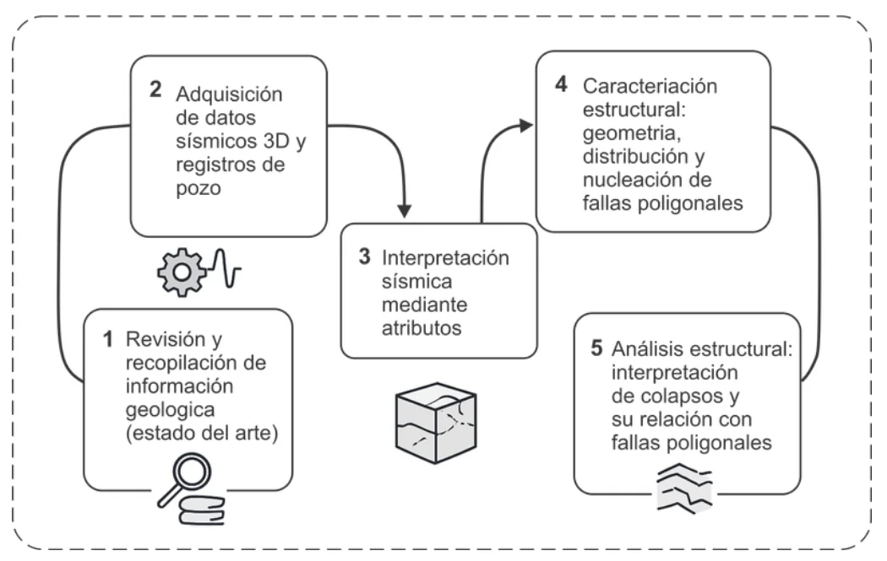

MétodoMethod
De los datos a la interpretaciónFrom data to interpretation
Revisión de la información geológica, datos sísmicos 3D y registros de pozo, interpretación con atributos sísmicos, caracterización de las fallas y análisis de los colapsos.
A review of the geological information, 3D seismic data and well logs, interpretation with seismic attributes, characterization of the faults, and analysis of the collapses.
